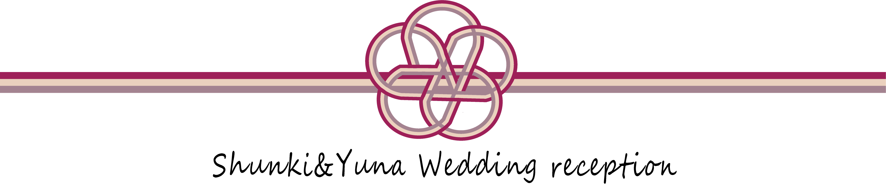
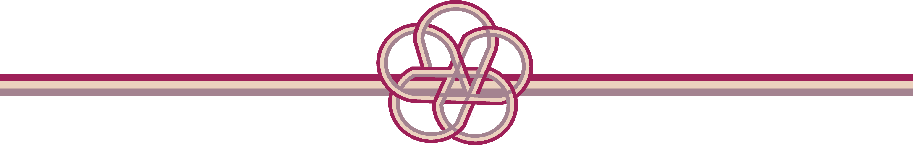
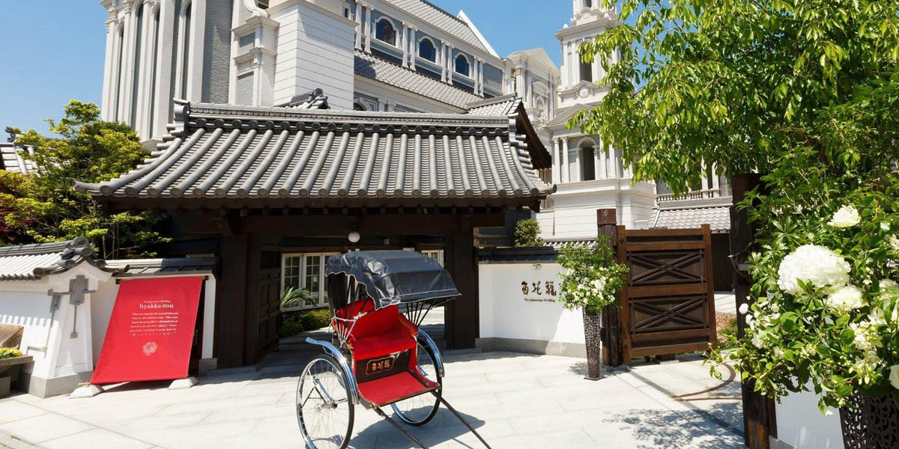

Now Loading

INFORMATION
WEDDING CEREMONY
挙式・披露宴
2021.08.08 日曜日
受付 / 午前 10:45
挙式 / 午前 11:45
披露宴 / 12:45
尚ご多用中恐縮に存じますが
午前11時45分からの結婚式にも
ご列席賜りたく
当日午前11時15分迄に
お越しくださいますよう
お願い申し上げます
ACCESS
会場/ 百花籠
名古屋市東区主税町3-6-3

＜お車でお越しの方＞
専用駐車場はございますが
数に限りがございます
シャトルバスや公共交通機関を
ご利用くださいます様
お願い申し上げます
＜シャトルバスのご案内＞
名古屋駅直通の無料バスが
運行しております
ぜひご利用ください
詳細はバス案内からどうぞ
＜電車でお越しの方＞
地下鉄桜通線「高岳」駅
1番出口より徒歩約15分
PRESENCE OR ABSENCE
尚お手数ながらご都合の程を
7月7日までに
ご一報いただければ幸いに存じます
以下のボタンより
回答に進むことができます
回答※回答に訂正がある場合は
お気軽にご連絡ください